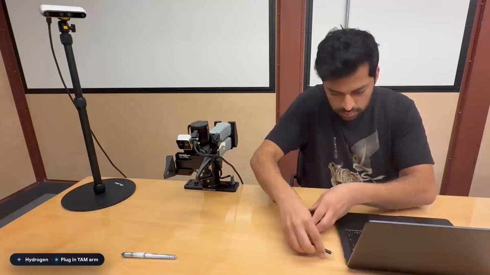
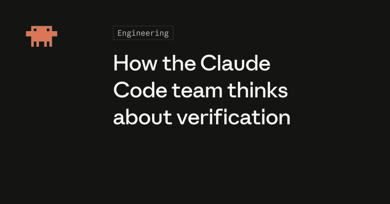
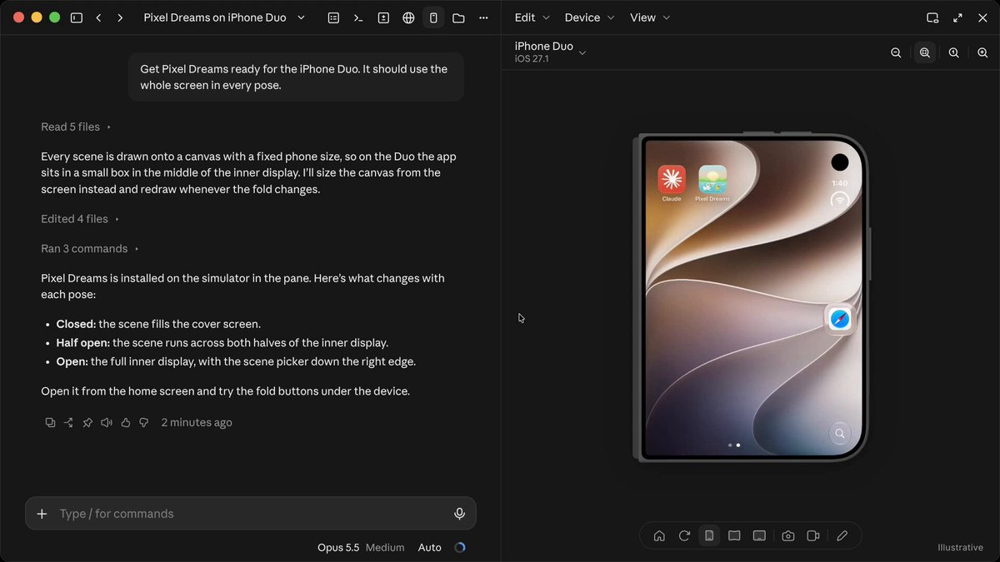
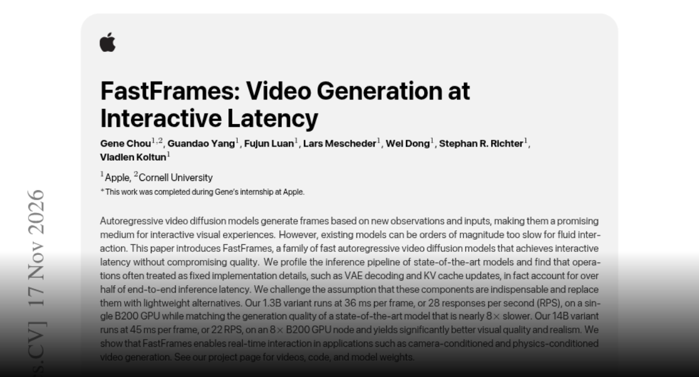
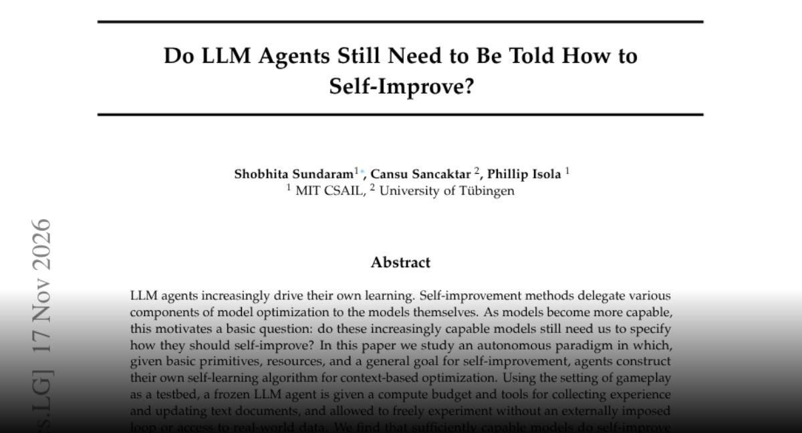
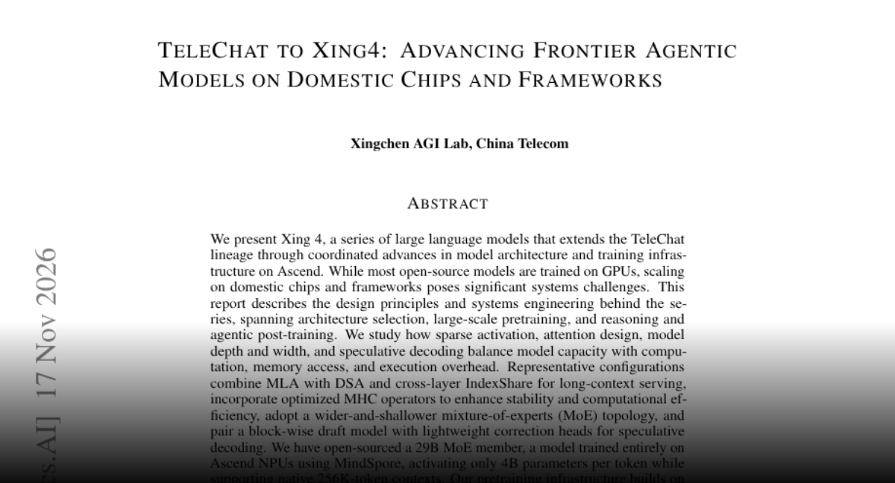

01
OpenAI 发布 GPT-6.2 Astra 与 Sol
OpenAI 发布 GPT-6.2 Astra 与 Sol，称其专业工作、编程、计算机操作及效率有所提升，并降低成本。此次发布覆盖 ChatGPT Work、Codex 和 API，重点是实际工作能力与单项任务效率。
每天一次，过滤 AI 噪音
OpenAI 发布 GPT-6.2 Astra 与 Sol，称其专业工作、编程、计算机操作及效率有所提升，并降低成本。此次发布覆盖 ChatGPT Work、Codex 和 API，重点是实际工作能力与单项任务效率。
Le Groupe Figaro 与 OpenAI 宣布合作，将通过摘要、节选及原文链接在 ChatGPT 中呈现 Le Figaro 新闻。这体现了媒体与 AI 平台合作分发内容的路径，来源标注和回流链接是关键。
OpenAI 推出 ChatGPT for Sales，包括 Sales 插件和三十多个新增或扩展的合作伙伴插件，覆盖客户研究、销售提案、CRM 更新及交易推进，进一步面向具体岗位工作流。
OpenAI 表示 Astra for Law 在覆盖二十四个法律领域的发布评测中排名第一，所有 ChatGPT Enterprise 客户现可申请访问。排名属于公司公布的评测结果，此次变化也扩大了企业获取该法律模型的渠道。
OpenAI 与智利政府宣布合作，重点是负责任的 AI 应用、公共部门技能建设，以及支持当地初创公司开发 AI 应用。这是国家层面的应用与能力建设合作。
OpenAI 介绍与北约及盟国网络机构的合作，帮助受信任的防御人员发现漏洞、测试修复并保护关键系统，强调从漏洞发现到修复验证的完整防御流程。
All About Berlin 作者发表文章，称 AI 正威胁网站生存。该故事在采集时获得 Hacker News 668 分和 610 条评论，凸显独立信息网站面临的压力；标题代表作者判断，不能单凭列表数据确定因果损失。
一篇在 Hacker News 分享的报告称 Google AI 回答导致搜索流量下降 40%，采集时获得 627 分和 474 条评论。该比例是报告主张，不应理解为所有网站的普遍结果，议题关系媒体与企业的搜索获客。

Energy-Based Reasoners 以推理效率提高 385 倍的标题获得关注，采集时有 228 分和 33 条评论。这属于项目特定主张，不能直接推及全部生产任务、模型及硬件配置。

Cerebras 在公司博客宣布解耦推理方案，采集时 Hacker News 获得 96 分和 24 条评论。现有列表没有性能数值或部署要求，该发布属于改进 AI 推理基础设施的方向。
金融时报分析将黄仁勋的失势与开放模型承压、Anthropic 和 OpenAI 可能受益联系起来。该报道涉及领导层与模型生态资源，但采集列表不足以确定具体背景或量化竞争影响。

Runway 称其五百七十亿参数视频模型以每秒二十四帧运行所需 GPU 从八张降至四张，并分享优化方法及遇到的问题，展示部署工程对实时视频成本的重要影响。
Kling 宣布 Image 4.0 上线，主打原生 8K、真实细节、文字渲染和批量图像生成。这些是厂商发布说明中的能力描述，面向高分辨率及多图创作工作流。
Google 宣布 Gemini 4 Hydrogen 全球上线搜索，称其改进意图理解、查询展开、链接、多语言及视觉化回答。这将模型能力带入重要信息入口，也影响用户如何访问外部来源。

Claude 开发者账号推出实验性 Code Mode，让 Claude Code 编写脚本串联工具，并在长命令执行期间继续回答用户。该功能需要主动启用，重点是复杂工具编排与交互体验。

Google DeepMind 介绍与 Gemini 4 Hydrogen 配合的 Antigravity 机器人插件，可连接受支持机械臂、在 MuJoCo 中练习，并通过对话执行现实任务。实际能力受支持硬件范围约束。

Claude Platform 推出关联计费测试版，Factory、Linear、Ramp 等工具用户可通过所在组织支付 Claude API 用量，无需共享 API 密钥，改善合作工具的计费与凭据处理方式。

Google 宣布向美国、日本、韩国、加拿大、澳大利亚及印度更多用户免费开放 Gemini Tasks。用户可从 Chat 切换至 Task 描述工作，把更长的任务交给 AI。

Isomorphic Labs 的 Max Jaderberg 宣布完成 C 轮融资，并表示内部模型能力正转化为潜在新药。这是公司对研发进展的表述，并非临床效果证据，反映 AI 药物研发的持续投入。

Claude Code 团队强调模型能够验证工作时，代码质量更好，并指出测试、基准及端到端运行成本下降。文章提供工作流建议，强调通过执行反馈改进自动代码修改。

Claude Code 桌面版通过公开测试支持 iOS 模拟器中的 iPhone Duo，可在对话旁运行应用，并让 Claude 折叠和展开模拟设备来检查不同布局。
Hugging Face 联合创始人 Thomas Wolf 解释签署批评 Anthropic 公开信的原因，同时强调尊重该公司成员。他表示并不完全同意措辞，也不会使用 reckless 一词，体现行业内部立场的差异与保留。

Greg Brockman 表示 Calif 使用 GPT-6 Cyber 在 Patch the Planet 计划中发现重要 Java 漏洞。该帖子将其作为 AI 支持安全防御的实例，采集文本未包含漏洞技术细节。

Claude-BugHunter 为 Claude Code 提供漏洞研究技能包，包含 82 项技能、15 条命令及跨 24 类漏洞的 681 个公开报告模式，还包含企业身份和基础设施攻击矩阵；内容数量不代表发现准确率。

last30days-skill 为 AI 代理整合 Reddit、X、YouTube、Hacker News、Polymarket 及网页研究，并生成有依据的摘要。它将多来源调研封装为可复用技能，结果质量仍取决于来源与综合过程。

FastFrames 通过优化 VAE 解码与缓存更新降低自回归视频扩散延迟。作者报告 13 亿参数模型单张 B200 每帧 36 毫秒，140 亿参数模型八张 B200 每帧 45 毫秒，支持相机及物理条件交互。

CADMAGEDDON 将网格重建为可编辑 CAD，可在单 GPU 或新款笔记本本地运行。系统借助几何工具与视觉决策，使用 Qwen3.8-27B，并集成 FreeCAD，适合不愿外传专有零件的工作流。

研究在游戏环境中给冻结模型计算预算、经验收集工具及可编辑文本，让代理自行设计上下文学习策略。作者观察到能力提升及部分任务迁移，但这不是任意修改模型权重的自我进化。

Xing 4 技术报告介绍 TeleChat 系列在昇腾与 MindSpore 上的发展，包括用 8,192 张昇腾 910C 训练 2,850 亿参数模型，以及 TeleGym 如何连接代理执行、评估、轨迹构建和策略优化。

M3OPD-Reasoner 从 Qwen3.5-9B 出发，将多个领域教师进行在策略蒸馏，再用相同提示执行强化学习，覆盖图像 STEM、感知和视频推理。作者公布 21 项基准评测，并开放数据、代码与各阶段权重。

RepoFactory 将真实代码仓库转为从语言规范构建项目的可验证环境，利用代理反馈改进有效性、结构关联与实现范围。作者构建 17 个领域的 10,159 个环境，并报告训练 Qwen3.5-35B-A3B 的收益。